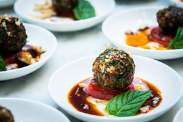

Mini Peynir Topları ve Üzüm Şişleri

Malzemeler:
- Küçük beyaz peynir topları
- Taze üzüm
- Kürdanlar veya şişler
Hazırlık:
- Bir kürdan veya şiş üzerine bir tane üzüm dizin.
- Üzümün üzerine bir peynir topu yerleştirin.
- Aynı işlemi tüm peynir topları için tekrarlayın.
- Hazırladığınız peynir topu ve üzüm şişlerini bir tabağa dizin ve servis yapın.
- Bu atıştırmalık, hem lezzetli hem de görsel olarak çekici olacaktır. Ayrıca, peynirin tuzlu tadı ile üzümün tatlı tadının mükemmel bir uyumu vardır. Afiyet olsun!